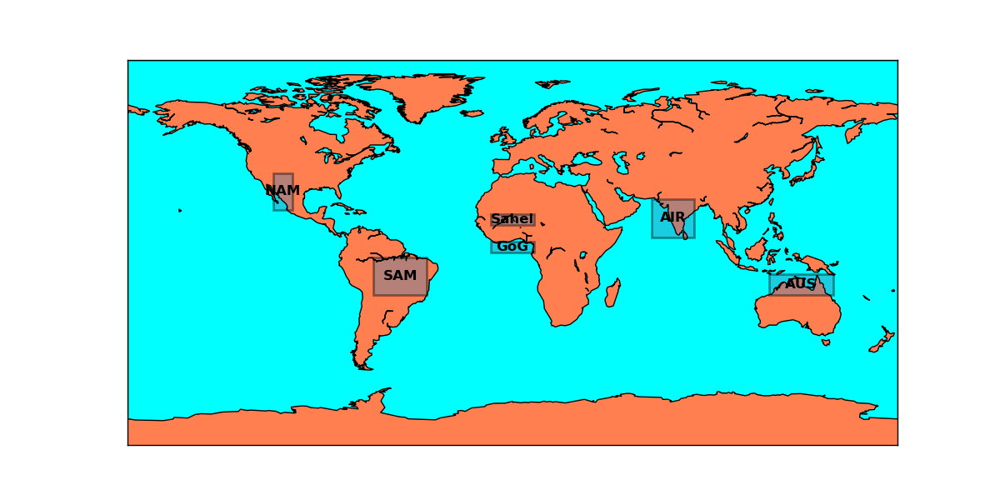
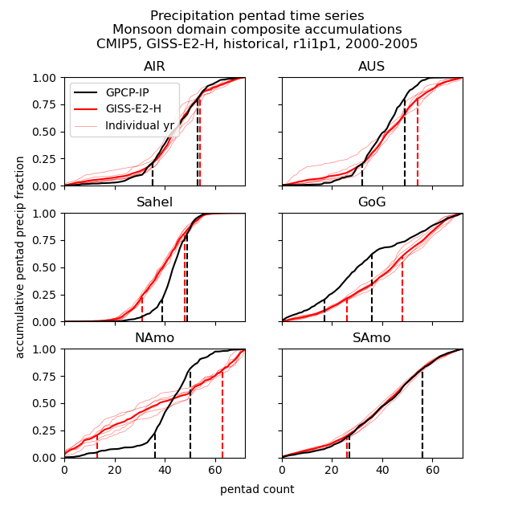

2B. Monsoon (Sperber)#
This notebook demonstrates how to use the PCDMI Monsoon (Sperber) driver.
It is expected that you have downloaded the sample data as demonstrated in the download notebook
The following cell reads in the choices you made during the download data step.
[1]:
from user_choices import demo_data_directory, demo_output_directory
For immediate help with using the monsoon (sperber) driver, use the --help flag, demonstrated here:
[2]:
%%bash
driver_monsoon_sperber.py --help
usage: driver_monsoon_sperber.py [-h] [--parameters PARAMETERS]
[--diags OTHER_PARAMETERS [OTHER_PARAMETERS ...]]
[--mip MIP] [--exp EXP]
[--results_dir RESULTS_DIR]
[--reference_data_path REFERENCE_DATA_PATH]
[--modpath MODPATH] [--frequency FREQUENCY]
[--realm REALM]
[--reference_data_name REFERENCE_DATA_NAME]
[--reference_data_lf_path REFERENCE_DATA_LF_PATH]
[--modpath_lf MODPATH_LF] [--varOBS VAROBS]
[--varModel VARMODEL]
[--ObsUnitsAdjust OBSUNITSADJUST]
[--ModUnitsAdjust MODUNITSADJUST]
[--units UNITS] [--osyear OSYEAR]
[--msyear MSYEAR] [--oeyear OEYEAR]
[--meyear MEYEAR] [--modnames MODNAMES]
[--list_monsoon_regions LIST_MONSOON_REGIONS]
[-r REALIZATION] [-d DEBUG] [--nc_out]
[--plot] [--includeOBS]
[--update_json UPDATE_JSON] [--cmec]
[--no_cmec]
Runs PCMDI Monsoon Sperber Computations
options:
-h, --help show this help message and exit
--parameters PARAMETERS, -p PARAMETERS
--diags OTHER_PARAMETERS [OTHER_PARAMETERS ...]
Path to other user-defined parameter file.
--mip MIP, --MIP MIP A WCRP MIP project such as CMIP3 and CMIP5
--exp EXP, --EXP EXP An experiment such as AMIP, historical or pi-contorl
--results_dir RESULTS_DIR, --rd RESULTS_DIR
The name of the folder where all runs will be stored.
--reference_data_path REFERENCE_DATA_PATH, --rdp REFERENCE_DATA_PATH
The path/filename of reference (obs) data.
--modpath MODPATH, --mp MODPATH
Explicit path to model data
--frequency FREQUENCY
--realm REALM
--reference_data_name REFERENCE_DATA_NAME
Name of reference data set
--reference_data_lf_path REFERENCE_DATA_LF_PATH
Path of landsea mask for reference data set
--modpath_lf MODPATH_LF
Path of landsea mask for model data set
--varOBS VAROBS Name of variable in reference data
--varModel VARMODEL Name of variable in model(s)
--ObsUnitsAdjust OBSUNITSADJUST
For unit adjust for OBS dataset. For example:
- (True, 'divide', 100.0) # Pa to hPa
- (True, 'subtract', 273.15) # degK to degC
- (False, 0, 0) # No adjustment (default)
--ModUnitsAdjust MODUNITSADJUST
For unit adjust for model dataset. For example:
- (True, 'divide', 100.0) # Pa to hPa
- (True, 'subtract', 273.15) # degK to degC
- (False, 0, 0) # No adjustment (default)
--units UNITS Final units for the variable
--osyear OSYEAR Start year for reference data set
--msyear MSYEAR Start year for model data set
--oeyear OEYEAR End year for reference data set
--meyear MEYEAR End year for model data set
--modnames MODNAMES List of models
--list_monsoon_regions LIST_MONSOON_REGIONS
List of regions
-r REALIZATION, --realization REALIZATION
Consider all accessible realizations as idividual
- r1i1p1: default, consider only 'r1i1p1' member
Or, specify realization, e.g, r3i1p1'
- *: consider all available realizations
-d DEBUG, --debug DEBUG
Option for debug: False (defualt) or True
--nc_out record netcdf output
--plot produce plots
--includeOBS include observation
--update_json UPDATE_JSON
Option for update existing JSON file: True (i.e., update) (default) / False (i.e., overwrite)
--cmec Use to save CMEC format metrics JSON
--no_cmec Do not save CMEC format metrics JSON
Basic Example#
[3]:
from IPython.display import Image
Image(filename = "../../../pcmdi_metrics/monsoon_sperber/doc/monsoon_domain_map.png")
[3]:

First we demonstrate the parameter file for the basic example.
Along with model and observational data, this metric needs to be provided with land fraction masks (modpath_lf and reference_data_lf_path). The model needs to have mip and exp specified at a minimum. frequency, realm, and realization are optional. Furthermore, start and end years must be selected for both model and observations.
[4]:
with open("basic_monsoon_sperber_param.py") as f:
print(f.read())
import os
#
# OPTIONS ARE SET BY USER IN THIS FILE AS INDICATED BELOW BY:
#
#
# MODEL VARIABLES THAT MUST BE SET
mip = 'cmip5'
exp = 'historical'
#frequency = 'da'
#realm = 'atm'
#realization = 'r6i1p1'
# MODEL VERSIONS AND ROOT PATH
modnames = ['GISS-E2-H']
modpath = 'demo_data/CMIP5_demo_timeseries/historical/atmos/day/pr/pr_day_GISS-E2-H_historical_r6i1p1_20000101-20051231.nc'
modpath_lf = 'demo_data/CMIP5_demo_data/cmip5.historical.GISS-E2-H.sftlf.nc' # land fraction mask
varModel = 'pr'
ModUnitsAdjust = (True, 'multiply', 86400.0) # kg m-2 s-1 to mm day-1
units = 'mm/d'
msyear = 2000
meyear = 2005
# ROOT PATH FOR OBSERVATIONS
reference_data_path = 'demo_data/obs4MIPs_PCMDI_daily/NASA-JPL/GPCP-1-3/day/pr/gn/latest/pr_day_GPCP-1-3_PCMDI_gn_19961002-20170101.nc'
reference_data_name = 'GPCP-IP'
reference_data_lf_path = 'demo_data/misc_demo_data/fx/sftlf.GPCP-IP.1x1.nc' # land fraction mask
varOBS = 'pr'
ObsUnitsAdjust = (True, 'multiply', 86400.0) # kg m-2 s-1 to mm day-1
osyear = 1998
oeyear = 1999
includeOBS = True
# DIRECTORY WHERE TO PUT RESULTS
results_dir = 'demo_output/monsoon_sperber/Ex1'
# OUTPUT OPTIONS
update_json = False
nc_out = False # Write output in NetCDF
plot = True # Create map graphics
To run the driver using only a parameter file for inputs, do the following:
[5]:
%%bash
driver_monsoon_sperber.py -p basic_monsoon_sperber_param.py
models: ['GISS-E2-H']
list_monsoon_regions: ['AIR', 'AUS', 'Sahel', 'GoG', 'NAmo', 'SAmo']
number of models: 1
realization: r1i1p1
output dir for graphics: demo_output/monsoon_sperber/Ex1
output dir for diagnostic_results: demo_output/monsoon_sperber/Ex1
output dir for metrics_results: demo_output/monsoon_sperber/Ex1
debug: False
==== model: obs ======================================
2024-06-03 16:55:21,806 [WARNING]: dataset.py(open_dataset:120) >> "No time coordinates were found in this dataset to decode. If time coordinates were expected to exist, make sure they are detectable by setting the CF 'axis' or 'standard_name' attribute (e.g., ds['time'].attrs['axis'] = 'T' or ds['time'].attrs['standard_name'] = 'time'). Afterwards, try decoding again with `xcdat.decode_time`."
2024-06-03 16:55:21,806 [WARNING]: dataset.py(open_dataset:120) >> "No time coordinates were found in this dataset to decode. If time coordinates were expected to exist, make sure they are detectable by setting the CF 'axis' or 'standard_name' attribute (e.g., ds['time'].attrs['axis'] = 'T' or ds['time'].attrs['standard_name'] = 'time'). Afterwards, try decoding again with `xcdat.decode_time`."
--- obs ---
model_path = demo_data/obs4MIPs_PCMDI_daily/NASA-JPL/GPCP-1-3/day/pr/gn/latest/pr_day_GPCP-1-3_PCMDI_gn_19961002-20170101.nc
plot:: region: AIR, nrows: 3, ncols: 2, index: 1
plot:: region: AUS, nrows: 3, ncols: 2, index: 2
plot:: region: Sahel, nrows: 3, ncols: 2, index: 3
plot:: region: GoG, nrows: 3, ncols: 2, index: 4
plot:: region: NAmo, nrows: 3, ncols: 2, index: 5
plot:: region: SAmo, nrows: 3, ncols: 2, index: 6
year = 1998
region = AIR
region = AUS
region = Sahel
region = GoG
region = NAmo
region = SAmo
year = 1999
region = AIR
region = AUS
region = Sahel
region = GoG
region = NAmo
region = SAmo
INFO::2024-06-03 16:56::pcmdi_metrics:: Results saved to a json file: /Users/lee1043/Documents/Research/git/pcmdi_metrics_20230620_pcmdi/pcmdi_metrics/doc/jupyter/Demo/demo_output/monsoon_sperber/Ex1/monsoon_sperber_stat_cmip5_historical_da_atm_2000-2005.json
2024-06-03 16:56:00,546 [INFO]: base.py(write:251) >> Results saved to a json file: /Users/lee1043/Documents/Research/git/pcmdi_metrics_20230620_pcmdi/pcmdi_metrics/doc/jupyter/Demo/demo_output/monsoon_sperber/Ex1/monsoon_sperber_stat_cmip5_historical_da_atm_2000-2005.json
2024-06-03 16:56:00,546 [INFO]: base.py(write:251) >> Results saved to a json file: /Users/lee1043/Documents/Research/git/pcmdi_metrics_20230620_pcmdi/pcmdi_metrics/doc/jupyter/Demo/demo_output/monsoon_sperber/Ex1/monsoon_sperber_stat_cmip5_historical_da_atm_2000-2005.json
==== model: GISS-E2-H ======================================
model_lf_path = demo_data/CMIP5_demo_data/cmip5.historical.GISS-E2-H.sftlf.nc
2024-06-03 16:56:00,755 [WARNING]: dataset.py(open_dataset:120) >> "No time coordinates were found in this dataset to decode. If time coordinates were expected to exist, make sure they are detectable by setting the CF 'axis' or 'standard_name' attribute (e.g., ds['time'].attrs['axis'] = 'T' or ds['time'].attrs['standard_name'] = 'time'). Afterwards, try decoding again with `xcdat.decode_time`."
2024-06-03 16:56:00,755 [WARNING]: dataset.py(open_dataset:120) >> "No time coordinates were found in this dataset to decode. If time coordinates were expected to exist, make sure they are detectable by setting the CF 'axis' or 'standard_name' attribute (e.g., ds['time'].attrs['axis'] = 'T' or ds['time'].attrs['standard_name'] = 'time'). Afterwards, try decoding again with `xcdat.decode_time`."
--- r1i1p1 ---
model_path = demo_data/CMIP5_demo_timeseries/historical/atmos/day/pr/pr_day_GISS-E2-H_historical_r6i1p1_20000101-20051231.nc
plot:: region: AIR, nrows: 3, ncols: 2, index: 1
plot:: region: AUS, nrows: 3, ncols: 2, index: 2
plot:: region: Sahel, nrows: 3, ncols: 2, index: 3
plot:: region: GoG, nrows: 3, ncols: 2, index: 4
plot:: region: NAmo, nrows: 3, ncols: 2, index: 5
plot:: region: SAmo, nrows: 3, ncols: 2, index: 6
year = 2000
region = AIR
region = AUS
region = Sahel
region = GoG
region = NAmo
region = SAmo
year = 2001
region = AIR
region = AUS
region = Sahel
region = GoG
region = NAmo
region = SAmo
year = 2002
region = AIR
region = AUS
region = Sahel
region = GoG
region = NAmo
region = SAmo
year = 2003
region = AIR
region = AUS
region = Sahel
region = GoG
region = NAmo
region = SAmo
year = 2004
region = AIR
region = AUS
region = Sahel
region = GoG
region = NAmo
region = SAmo
year = 2005
region = AIR
region = AUS
region = Sahel
region = GoG
region = NAmo
region = SAmo
INFO::2024-06-03 16:56::pcmdi_metrics:: Results saved to a json file: /Users/lee1043/Documents/Research/git/pcmdi_metrics_20230620_pcmdi/pcmdi_metrics/doc/jupyter/Demo/demo_output/monsoon_sperber/Ex1/monsoon_sperber_stat_cmip5_historical_da_atm_2000-2005.json
2024-06-03 16:56:27,527 [INFO]: base.py(write:251) >> Results saved to a json file: /Users/lee1043/Documents/Research/git/pcmdi_metrics_20230620_pcmdi/pcmdi_metrics/doc/jupyter/Demo/demo_output/monsoon_sperber/Ex1/monsoon_sperber_stat_cmip5_historical_da_atm_2000-2005.json
2024-06-03 16:56:27,527 [INFO]: base.py(write:251) >> Results saved to a json file: /Users/lee1043/Documents/Research/git/pcmdi_metrics_20230620_pcmdi/pcmdi_metrics/doc/jupyter/Demo/demo_output/monsoon_sperber/Ex1/monsoon_sperber_stat_cmip5_historical_da_atm_2000-2005.json
Output options#
There are several options for output data format. Users can choose to generate metrics in netCDF format along with png graphics.
To save these results in a different folder, the --result_dir value is changed. Using $1 to refer to the demo_output_directory variable is a trick for the Jupyter Notebook and is not needed for regular command line use.
[6]:
%%bash -s "$demo_output_directory"
driver_monsoon_sperber.py -p basic_monsoon_sperber_param.py \
--nc_out --plot --results_dir $1/monsoon_sperber/Ex2
models: ['GISS-E2-H']
list_monsoon_regions: ['AIR', 'AUS', 'Sahel', 'GoG', 'NAmo', 'SAmo']
number of models: 1
realization: r1i1p1
output dir for graphics: demo_output/monsoon_sperber/Ex2
output dir for diagnostic_results: demo_output/monsoon_sperber/Ex2
output dir for metrics_results: demo_output/monsoon_sperber/Ex2
debug: False
==== model: obs ======================================
2024-06-03 16:56:38,948 [WARNING]: dataset.py(open_dataset:120) >> "No time coordinates were found in this dataset to decode. If time coordinates were expected to exist, make sure they are detectable by setting the CF 'axis' or 'standard_name' attribute (e.g., ds['time'].attrs['axis'] = 'T' or ds['time'].attrs['standard_name'] = 'time'). Afterwards, try decoding again with `xcdat.decode_time`."
2024-06-03 16:56:38,948 [WARNING]: dataset.py(open_dataset:120) >> "No time coordinates were found in this dataset to decode. If time coordinates were expected to exist, make sure they are detectable by setting the CF 'axis' or 'standard_name' attribute (e.g., ds['time'].attrs['axis'] = 'T' or ds['time'].attrs['standard_name'] = 'time'). Afterwards, try decoding again with `xcdat.decode_time`."
--- obs ---
model_path = demo_data/obs4MIPs_PCMDI_daily/NASA-JPL/GPCP-1-3/day/pr/gn/latest/pr_day_GPCP-1-3_PCMDI_gn_19961002-20170101.nc
plot:: region: AIR, nrows: 3, ncols: 2, index: 1
plot:: region: AUS, nrows: 3, ncols: 2, index: 2
plot:: region: Sahel, nrows: 3, ncols: 2, index: 3
plot:: region: GoG, nrows: 3, ncols: 2, index: 4
plot:: region: NAmo, nrows: 3, ncols: 2, index: 5
plot:: region: SAmo, nrows: 3, ncols: 2, index: 6
year = 1998
region = AIR
region = AUS
region = Sahel
region = GoG
region = NAmo
region = SAmo
year = 1999
region = AIR
region = AUS
region = Sahel
region = GoG
region = NAmo
region = SAmo
INFO::2024-06-03 16:57::pcmdi_metrics:: Results saved to a json file: /Users/lee1043/Documents/Research/git/pcmdi_metrics_20230620_pcmdi/pcmdi_metrics/doc/jupyter/Demo/demo_output/monsoon_sperber/Ex2/monsoon_sperber_stat_cmip5_historical_da_atm_2000-2005.json
2024-06-03 16:57:17,702 [INFO]: base.py(write:251) >> Results saved to a json file: /Users/lee1043/Documents/Research/git/pcmdi_metrics_20230620_pcmdi/pcmdi_metrics/doc/jupyter/Demo/demo_output/monsoon_sperber/Ex2/monsoon_sperber_stat_cmip5_historical_da_atm_2000-2005.json
2024-06-03 16:57:17,702 [INFO]: base.py(write:251) >> Results saved to a json file: /Users/lee1043/Documents/Research/git/pcmdi_metrics_20230620_pcmdi/pcmdi_metrics/doc/jupyter/Demo/demo_output/monsoon_sperber/Ex2/monsoon_sperber_stat_cmip5_historical_da_atm_2000-2005.json
==== model: GISS-E2-H ======================================
model_lf_path = demo_data/CMIP5_demo_data/cmip5.historical.GISS-E2-H.sftlf.nc
2024-06-03 16:57:17,887 [WARNING]: dataset.py(open_dataset:120) >> "No time coordinates were found in this dataset to decode. If time coordinates were expected to exist, make sure they are detectable by setting the CF 'axis' or 'standard_name' attribute (e.g., ds['time'].attrs['axis'] = 'T' or ds['time'].attrs['standard_name'] = 'time'). Afterwards, try decoding again with `xcdat.decode_time`."
2024-06-03 16:57:17,887 [WARNING]: dataset.py(open_dataset:120) >> "No time coordinates were found in this dataset to decode. If time coordinates were expected to exist, make sure they are detectable by setting the CF 'axis' or 'standard_name' attribute (e.g., ds['time'].attrs['axis'] = 'T' or ds['time'].attrs['standard_name'] = 'time'). Afterwards, try decoding again with `xcdat.decode_time`."
--- r1i1p1 ---
model_path = demo_data/CMIP5_demo_timeseries/historical/atmos/day/pr/pr_day_GISS-E2-H_historical_r6i1p1_20000101-20051231.nc
plot:: region: AIR, nrows: 3, ncols: 2, index: 1
plot:: region: AUS, nrows: 3, ncols: 2, index: 2
plot:: region: Sahel, nrows: 3, ncols: 2, index: 3
plot:: region: GoG, nrows: 3, ncols: 2, index: 4
plot:: region: NAmo, nrows: 3, ncols: 2, index: 5
plot:: region: SAmo, nrows: 3, ncols: 2, index: 6
year = 2000
region = AIR
region = AUS
region = Sahel
region = GoG
region = NAmo
region = SAmo
year = 2001
region = AIR
region = AUS
region = Sahel
region = GoG
region = NAmo
region = SAmo
year = 2002
region = AIR
region = AUS
region = Sahel
region = GoG
region = NAmo
region = SAmo
year = 2003
region = AIR
region = AUS
region = Sahel
region = GoG
region = NAmo
region = SAmo
year = 2004
region = AIR
region = AUS
region = Sahel
region = GoG
region = NAmo
region = SAmo
year = 2005
region = AIR
region = AUS
region = Sahel
region = GoG
region = NAmo
region = SAmo
INFO::2024-06-03 16:57::pcmdi_metrics:: Results saved to a json file: /Users/lee1043/Documents/Research/git/pcmdi_metrics_20230620_pcmdi/pcmdi_metrics/doc/jupyter/Demo/demo_output/monsoon_sperber/Ex2/monsoon_sperber_stat_cmip5_historical_da_atm_2000-2005.json
2024-06-03 16:57:49,999 [INFO]: base.py(write:251) >> Results saved to a json file: /Users/lee1043/Documents/Research/git/pcmdi_metrics_20230620_pcmdi/pcmdi_metrics/doc/jupyter/Demo/demo_output/monsoon_sperber/Ex2/monsoon_sperber_stat_cmip5_historical_da_atm_2000-2005.json
2024-06-03 16:57:49,999 [INFO]: base.py(write:251) >> Results saved to a json file: /Users/lee1043/Documents/Research/git/pcmdi_metrics_20230620_pcmdi/pcmdi_metrics/doc/jupyter/Demo/demo_output/monsoon_sperber/Ex2/monsoon_sperber_stat_cmip5_historical_da_atm_2000-2005.json
Results#
At a minimum, this driver will produce a JSON file containing the monsoon metrics in the result_dir. If the user requests the binary and plot outputs, those will also be present in the result_dir. Looking at the results from Ex2:
[7]:
! ls {demo_output_directory + "/monsoon_sperber/Ex2"}
cmip5_GISS-E2-H_historical_r1i1p1_monsoon_sperber_2000-2005.nc
cmip5_GISS-E2-H_historical_r1i1p1_monsoon_sperber_2000-2005.png
cmip5_obs_historical_obs_monsoon_sperber_1998-1999.nc
cmip5_obs_historical_obs_monsoon_sperber_1998-1999.png
monsoon_sperber_stat_cmip5_historical_da_atm_2000-2005.json
monsoon_sperber_stat_cmip5_historical_da_atm_2000-2005_org_2053.json
monsoon_sperber_stat_cmip5_historical_da_atm_2000-2005_org_28544.json
monsoon_sperber_stat_cmip5_historical_da_atm_2000-2005_org_5752.json
monsoon_sperber_stat_cmip5_historical_da_atm_2000-2005_org_6404.json
monsoon_sperber_stat_cmip5_historical_da_atm_2000-2005_org_8773.json
The monsoon metrics are found in the “RESULTS” object in the JSON file. Below we extract and display these metrics.
[8]:
import json
metrics_file = demo_output_directory + "/monsoon_sperber/Ex2/monsoon_sperber_stat_cmip5_historical_da_atm_2000-2005.json"
with open(metrics_file) as f:
results = json.load(f)["RESULTS"]
print(json.dumps(results, indent = 2))
{
"GISS-E2-H": {
"r1i1p1": {
"AIR": {
"decay_index": 54,
"duration": 20,
"onset_index": 35,
"slope": 0.03263245840754827
},
"AUS": {
"decay_index": 54,
"duration": 23,
"onset_index": 32,
"slope": 0.027284635342319282
},
"GoG": {
"decay_index": 48,
"duration": 23,
"onset_index": 26,
"slope": 0.01760572909468477
},
"NAmo": {
"decay_index": 63,
"duration": 51,
"onset_index": 13,
"slope": 0.011989028718271575
},
"SAmo": {
"decay_index": 56,
"duration": 31,
"onset_index": 26,
"slope": 0.020573642678822508
},
"Sahel": {
"decay_index": 48,
"duration": 18,
"onset_index": 31,
"slope": 0.03399930924787022
}
}
}
}
For more help interpreting these values, please consult the following paper:
Sperber, K. and H. Annamalai, 2014: The use of fractional accumulated precipitation for the evaluation of the annual cycle of monsoons. Climate Dynamics, 43:3219-3244, doi: 10.1007/s00382-014-2099-3
If plot = True, the driver also outputs figures that compare the precipitation pentads between model and observations.
[9]:
Image(filename=demo_output_directory+"/monsoon_sperber/Ex2/cmip5_GISS-E2-H_historical_r1i1p1_monsoon_sperber_2000-2005.png")
[9]:

[ ]: